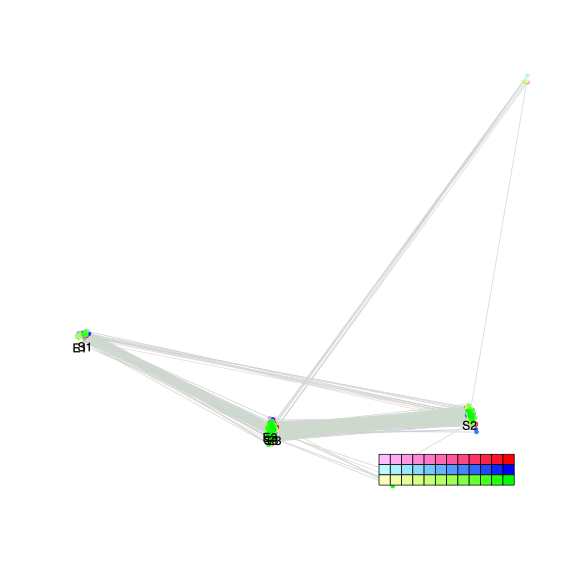

| chain # | burnin | subsample | Iterations (remaining) | command line | subdirectory | directory |
|---|---|---|---|---|---|---|
| 1 | 10000 | 1 | 90000 | bali-phy E1_AA_red3_Alpha_Manatees.fas -s 53248 -n Alpha_Manatees_c1 | Alpha_Manatees_c1-1 | /DATA/work/ONCOGENEVOL/database/trees/Bali-Phy/red3/E1 |
| 2 | 10000 | 1 | 90000 | bali-phy E1_AA_red3_Alpha_Manatees.fas -s 56232 -n Alpha_Manatees_c2 | Alpha_Manatees_c2-1 | /DATA/work/ONCOGENEVOL/database/trees/Bali-Phy/red3/E1 |
| 3 | 10000 | 1 | 90000 | bali-phy E1_AA_red3_Alpha_Manatees.fas -s 23658 -n Alpha_Manatees_c3 | Alpha_Manatees_c3-1 | /DATA/work/ONCOGENEVOL/database/trees/Bali-Phy/red3/E1 |
| P(data|M) = -9963.355 +- 0.588 | Complete sample: 6 topologies | 95% Bayesian credible interval: 4 topologies |

Phylogeny Distribution

| Partition support: Summary |
| Partition support graph: SVG |
| 50% consensus | Newick (+PP) | SVG | |||||
| 66% consensus | Newick (+PP) | SVG | |||||
| 80% consensus | Newick (+PP) | SVG | |||||
| 90% consensus | Newick (+PP) | SVG | |||||
| 95% consensus | Newick (+PP) | SVG | |||||
| 99% consensus | Newick (+PP) | SVG | |||||
| 100% consensus | Newick (+PP) | SVG | |||||
| MAP | Newick (+PP) | SVG | |||||
| greedy | Newick (+PP) | SVG |
{kind=link}
{kind=link}
{kind=link}
{kind=link}
{kind=link}
{kind=link}
{kind=link}
{kind=link}
Alignment Distribution
Partition 1
| Diff | Min. %identity | # Sites | Constant | Informative | ||||
|---|---|---|---|---|---|---|---|---|
| Initial | FASTA | HTML | Diff | 5.16% | 698 | 2 (0.287%) | 289 (41.4%) | |
| Best (WPD) | FASTA | HTML | AU | 30.2% | 992 | 102 (10.3%) | 333 (33.6%) |


Mixing
| burnin (scalar) | ESS (scalar) | ESS (partition) | ASDSF | MSDSF | PSRF-CI80% | PSRF-RCF |
|---|---|---|---|---|---|---|
| 1649 | 354.2 | 536.055 | 0.013 | 0.037 | 1.003 | 1.023 |
Projection of RF distances for the first 3 chains3D | Variation of split PPs across chains |
Scalar variables
| Statistic | Median | 95% BCI | ACT | ESS | burnin | PSRF-CI80% | PSRF-RCF |
|---|---|---|---|---|---|---|---|
| prior | -632.7 | (-703.2, -563.3) | 359.4 | 751 | 1254 | 1.002 | 1.022 |
| prior_A1 | -620.8 | (-692.5, -554.5) | 373.5 | 722 | 1254 | 1.003 | 1.022 |
| likelihood | -9919 | (-9961, -9875) | 327 | 825 | 241 | 1.002 | 1.021 |
| logp | -1.055e+04 | (-1.06e+04, -1.051e+04) | 198.1 | 1362 | 1649 | 1 | 1.011 |
| Heat.beta | 1 | ||||||
| Scale1 | 3.047 | (1.424, 5.557) | 1.008 | 267906 | 56 | 1 | 0.9994 |
| S1.F.pi.A | 0.07939 | (0.06939, 0.08996) | 7.876 | 34281 | 226 | 1 | 1.002 |
| S1.F.pi.R | 0.04537 | (0.03743, 0.05364) | 8.172 | 33038 | 268 | 1 | 1.001 |
| S1.F.pi.N | 0.03725 | (0.03079, 0.04387) | 8.69 | 31071 | 234 | 1 | 1.002 |
| S1.F.pi.D | 0.06107 | (0.05179, 0.071) | 8.486 | 31816 | 415 | 1 | 0.9964 |
| S1.F.pi.C | 0.04718 | (0.03776, 0.05727) | 9.123 | 29595 | 401 | 1 | 0.9951 |
| S1.F.pi.Q | 0.0475 | (0.04019, 0.05525) | 12.51 | 21583 | 431 | 1 | 0.9996 |
| S1.F.pi.E | 0.06719 | (0.0582, 0.07649) | 9.47 | 28510 | 305 | 1 | 0.9994 |
| S1.F.pi.G | 0.083 | (0.07064, 0.0958) | 9.665 | 27937 | 657 | 0.9997 | 1.006 |
| S1.F.pi.H | 0.02136 | (0.01621, 0.02672) | 7.99 | 33792 | 317 | 0.9996 | 0.9994 |
| S1.F.pi.I | 0.05088 | (0.04254, 0.05941) | 8.572 | 31497 | 276 | 0.9999 | 1.002 |
| S1.F.pi.L | 0.09288 | (0.08083, 0.1056) | 8.271 | 32646 | 541 | 1 | 0.9989 |
| S1.F.pi.K | 0.04399 | (0.03645, 0.05167) | 7.925 | 34068 | 624 | 0.9996 | 1.002 |
| S1.F.pi.M | 0.01795 | (0.0133, 0.02294) | 8.261 | 32685 | 301 | 0.9997 | 0.9957 |
| S1.F.pi.F | 0.03283 | (0.02542, 0.04068) | 8.614 | 31345 | 318 | 1 | 1.003 |
| S1.F.pi.P | 0.0455 | (0.03664, 0.05511) | 10.6 | 25460 | 458 | 0.9995 | 0.9998 |
| S1.F.pi.S | 0.0565 | (0.0483, 0.06518) | 9.328 | 28945 | 360 | 0.9999 | 1.001 |
| S1.F.pi.T | 0.06392 | (0.05493, 0.07337) | 8.813 | 30637 | 275 | 0.9998 | 1.006 |
| S1.F.pi.W | 0.01102 | (0.006672, 0.01606) | 7.854 | 34377 | 473 | 1.001 | 0.9928 |
| S1.F.pi.Y | 0.02358 | (0.01765, 0.03018) | 8.272 | 32640 | 547 | 1 | 0.9966 |
| S1.F.pi.V | 0.06911 | (0.05941, 0.07924) | 10.62 | 25433 | 138 | 1.001 | 1 |
| I1.RS07.meanIndelLengthMinus1 | 5.961 | (3.966, 8.385) | 159.2 | 1695 | 831 | 1.001 | 1.002 |
| I1.RS07.logLambda | -4.087 | (-4.38, -3.819) | 58.57 | 4609 | 153 | 0.9998 | 1.003 |
| |A1| | 930 | (876, 982) | 762.2 | 354 | 1226 | 1 | 1.023 |
| #indels1 | 68 | (58, 77) | 384.7 | 701 | 1103 | 0.9474 | 1.015 |
| |indels1| | 475 | (379, 569) | 165.2 | 1634 | 591 | 0.9893 | 1.008 |
| #substs1 | 1616 | (1574, 1657) | 594.5 | 454 | 683 | 0.9939 | 1.017 |
| Scale1*|T| | 3.423 | (3.233, 3.622) | 18.38 | 14693 | 147 | 1 | 1.001 |
| |A| | 930 | (876, 982) | 762.2 | 354 | 1226 | 1 | 1.023 |
| #indels | 68 | (58, 77) | 384.7 | 701 | 1103 | 0.9474 | 1.015 |
| |indels| | 475 | (379, 569) | 165.2 | 1634 | 591 | 0.9893 | 1.008 |
| #substs | 1616 | (1574, 1657) | 594.5 | 454 | 683 | 0.9939 | 1.017 |
| |T| | 1.124 | (0.4915, 1.943) | 1.003 | 269061 | 56 | 0.9997 | 0.9993 |